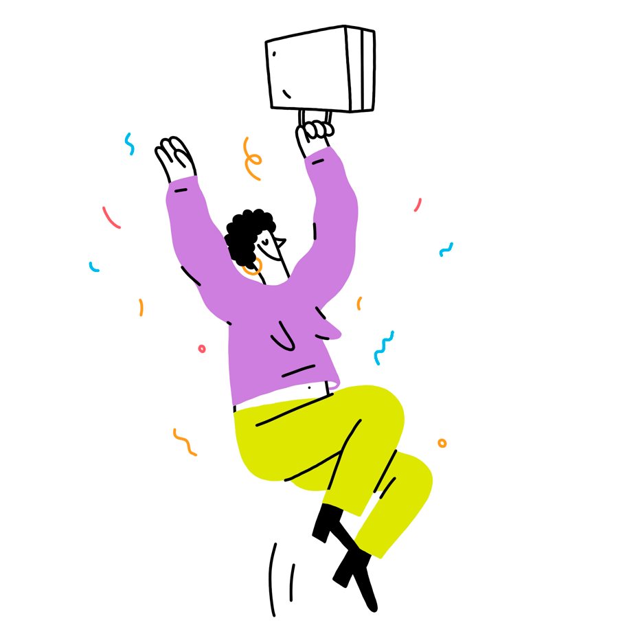
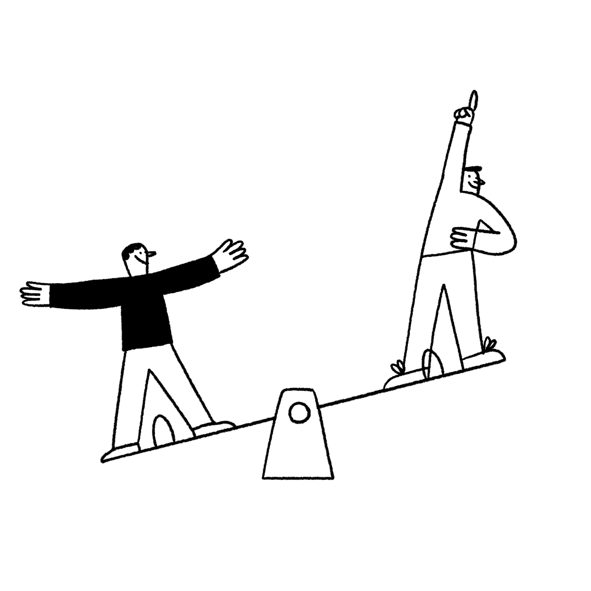
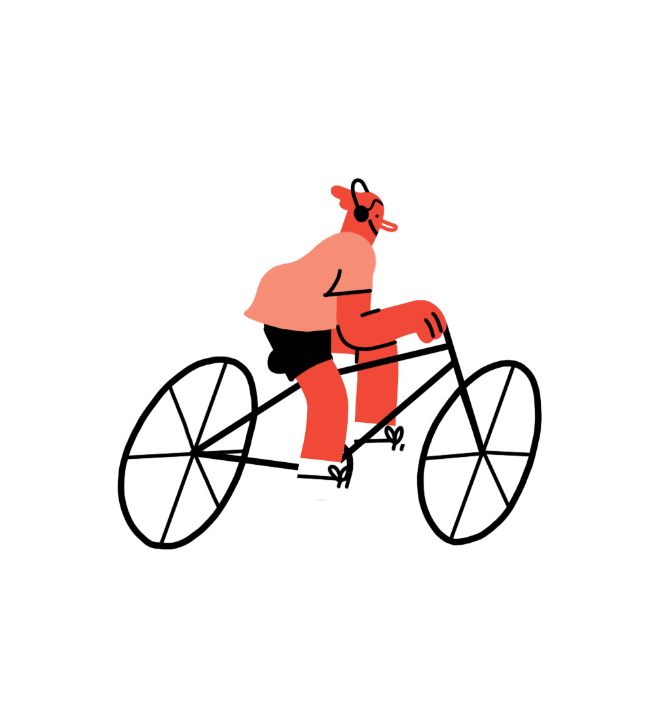

Discover the Joy

Find Joy in Small Wins
Celebrate the little victories in your day, like finishing a task or learning something new. Joy often comes from appreciating the small things.
Create Your Joyful Space
Design a corner in your room or a spot outside where you feel happiest. Surround yourself with things that bring you comfort and smiles.

Share the Joy
Send a kind message, share a laugh, or help a friend. Spreading joy can brighten your own day and someone else’s too.

Joy in Movement
Dance, stretch, or take a walk. Moving your body can lift your spirits and help you connect with the joy of being alive.